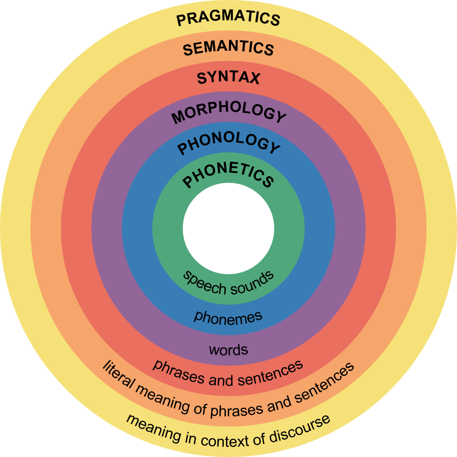

Welcome to Linguistics Club!
What is Linguistics?
Linguistics is the study of languages, what they contain, and how they are used. Linguistics can relate to everything from foreign language learning to cryptography! We can learn about language evolution, history, geography, culture, and much more :D
Branches of Linguistics
There are two main categories of linguistics, though it is important to note that they are very interconnected and often overlap.
1. Microlinguistics
The study of the structure of language. Focuses on the technical aspects of it, rather than the context. These are the core areas of linguistics and are used in the branches of macrolinguistics.
-> Phonetics and phonology
-> Morphology
-> Syntax
-> Lexicology and semantics

2. Macrolinguistics
The study of language in its context, such as the culture and behaviors of people. It often overlaps with other sciences rather than focusing on simply the language itself.
Language Variation
1. Sociolinguistics
a. Dialectology
b. Ethnolinguistics
2. Discourse Analysis, Stylistics, and Text Linguistics
Other Branches
1. Contrastive Linguistics
2. Psycholinguistics
3. Neurolinguistics
4. Computational Linguistics
5. Applied Linguistics
6. Synchronic Linguistics
7. Historical Linguistics
8. Comparative Linguistics
What Does Linguistics Club Do?
-> Learn basic greetings and questions and stuff for a variety of languages
-> Practice alphabet memorization / word association techniques
-> Evolution of languages & etymology
-> Compare sentence structures (and similar things) across languages
-> Vexillology & geography
-> Mythology
-> Virtual field trips
-> Cryptography
-> Shakespearean/old English